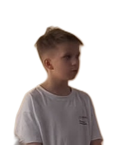

Свой
проект
меняет всё

У каждого на смене — свой проект, со
своим замыслом и своим темпом.
Свой проект — другой режим существования. О нём
думают за обедом.
Про него рассказывают маме в первый же созвон —
взахлёб и с подробностями.
Родители переспрашивают: точно ли это учёба? Точно.
А у вашего есть проект, о котором он думает за обедом?
@aida_codit